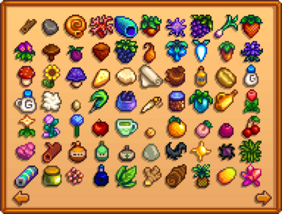
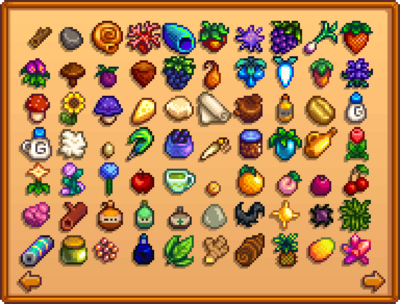

Gönderme

- Bu makale öncelikle oyun mekaniği hakkındadır. Yerleştirilebilir nesne için Çiftlik Binaları bölümüne bakınız.
| “ | “Satılacak bir şeyin olursa bu Kutuya Koyman yeterli. Geceleri almaya gelirim.” |
| — Lewis |
Ürünlerinizi Nakliye Kutusuna Koyarak Satabilirsiniz. Ancak Altınlar bir sonraki sabah gelecektir oyun, oyuncunun eşyaları Çiftlik üzerindeki posta kutusunun yanında bulunan nakliye kutusuna koyarak satmasına izin verir.
 İridyum kaliteli ürünler en yüksek değere sahiptir, ardından
İridyum kaliteli ürünler en yüksek değere sahiptir, ardından  Altın,
Altın,  gümüş ve normal kalitede ürünler gelir. Sevkiyattan alınan altın miktarı ile bir tüccara satıştaki altın miktarı aynıdır. Tek fark,tüccarların onlara giderseniz hemen ödeme yapması, nakliyenin ise parayı ertesi gün sabah vermesidir.
gümüş ve normal kalitede ürünler gelir. Sevkiyattan alınan altın miktarı ile bir tüccara satıştaki altın miktarı aynıdır. Tek fark,tüccarların onlara giderseniz hemen ödeme yapması, nakliyenin ise parayı ertesi gün sabah vermesidir.
Oyuncu yaklaştığında nakliye kutusu kapağı açılır.Bir öğeyi (veya ürün yığınını) göndermek için, nakliye kutusuna yaklaşın ve üzerine sağ tıklayın ,ardından envanterdeki öğeye sol tıklayarak ürünü koyun.
Bir hata yapılırsa ve yanlış ürün sevkiyat kutusuna konulursa, kutuyu aynı gün içinde istediğiniz zaman alabilirsiniz. ancak sadece gönderilen son ürün görüntülenecektir. Daha sonra envantere geri eklemek için o öğeye tıklayabilirsiniz. (Yalnızca gönderilen son ürün alınabilir)
Oyuncu oyuna bir Nakliye Kutusu ile başlar, ancak daha fazlası Marangoz Atölyesinden  250g ve
250g ve  Odun (150) karşılığında satın alınabilir. Bunlar, kolaylık sağlamak için Çiftlik üzerinde herhangi bir yere yerleştirilebilir.
Odun (150) karşılığında satın alınabilir. Bunlar, kolaylık sağlamak için Çiftlik üzerinde herhangi bir yere yerleştirilebilir.
Koleksiyon
Aşağıda gösterilen sekme, oyuncu menüsünün Gönderi Toplama sekmesidir. Oyun, gösterilen öğelerin hangisinden kaç tane gönderildiğini takip eder.
 

Birinci Sayfa
İkinci Sayfa
Üçüncü Sayfa
Başarımlar
Nakliye ile ilgili Başarımlar 3 tane vardır.
- Çoklu Tarım (Her Ekinden 15 Tane Gönderin ekin)
- Tekli Tarım (Bir Ekinden 300 tane gönderin. ekin)
- Tam gönderi (Tüm öğeleri gönderin)
Çoklu Tarım
Çoklu Tarım başarımını kazanmak için tam olarak 28 adet ekin gönderilmelidir. ("Her ekinden 15 tane gönder."):
Bahar Ekinleri
Yaz Ekinleri
Güz Ekinleri
Tekli Tarım
Tekli Tarım başarımını ("Bir ekinden 300 tane gönder.") kazanmak için 33 ekin arasından birisi seçilebilir. Yukarıda bulunan listedeki 28 taneden biri ya da;
Tam Gönderim
Tam Gönderi başarısını ("Her öğeyi gönder") kazanmak için, oyuncu menüsünün Gönderi Koleksiyonu sekmesinde gösterilen her öğeden en az bir tane göndermelisiniz.
Geçmiş
- 1.3.27: Marangoz dükkanından ekstra nakliye kutuları satın alınabilir hale getirdi.
- 1.5: Varsayılan olarak gelen nakliye kutusu artık Marangoz atölyesinde kaldırılabilir ya da yok edilebilir oldu. Mini nakliye kutuları tanıtıldı.
- 1.6: Deniz Tarağı gönderilen öğelerden kaldırılıp balıkçılık koleksiyonuna taşındı.